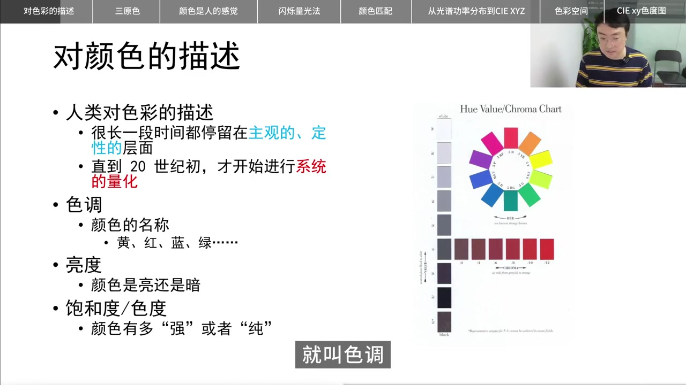
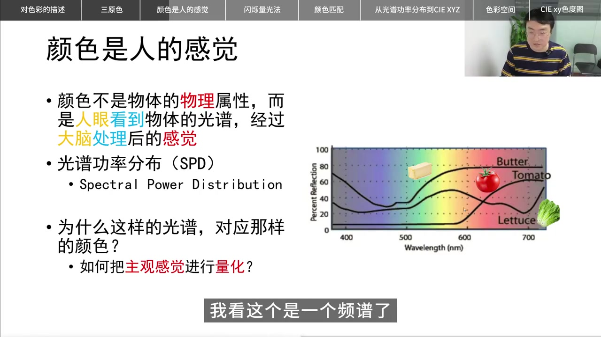
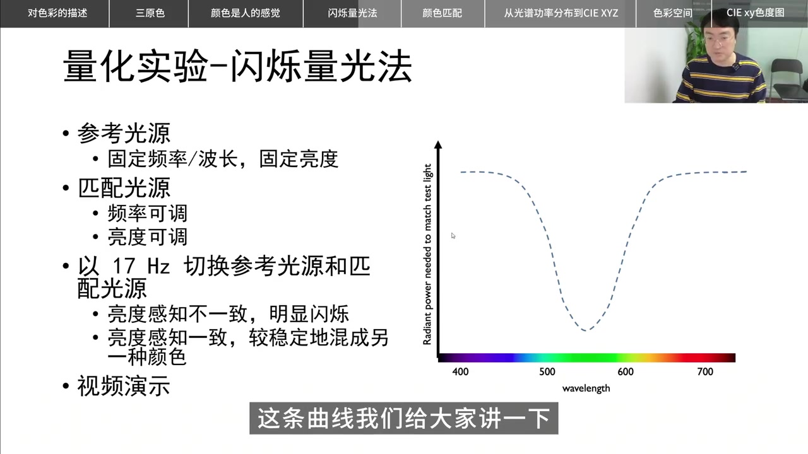
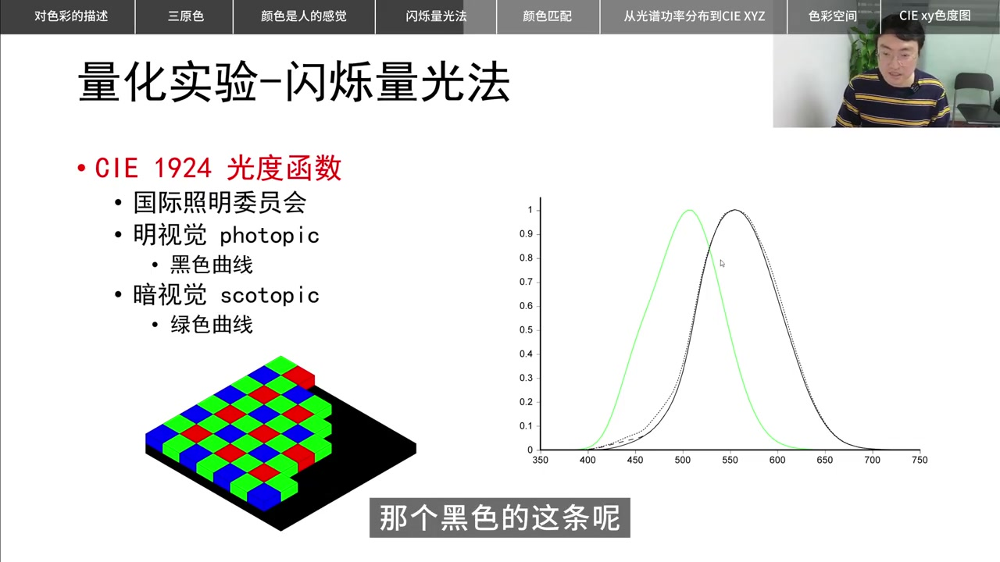
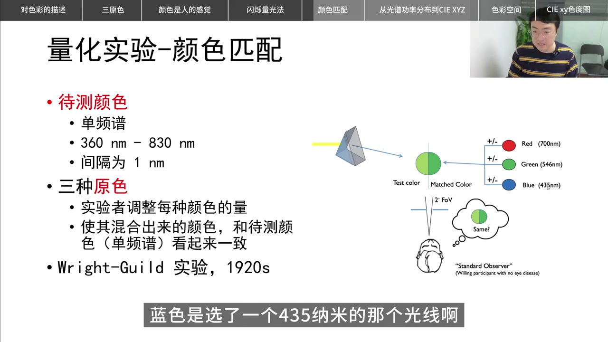
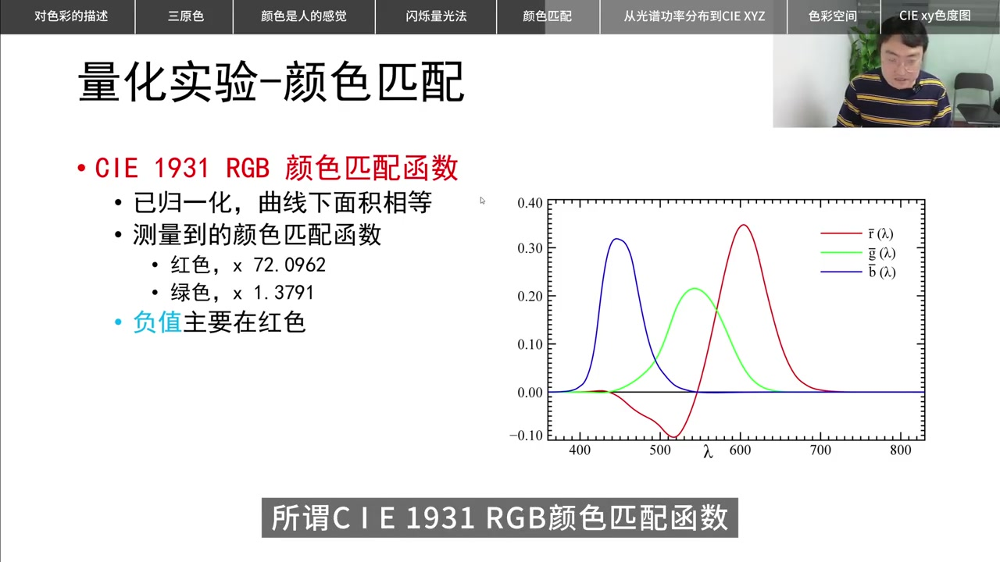
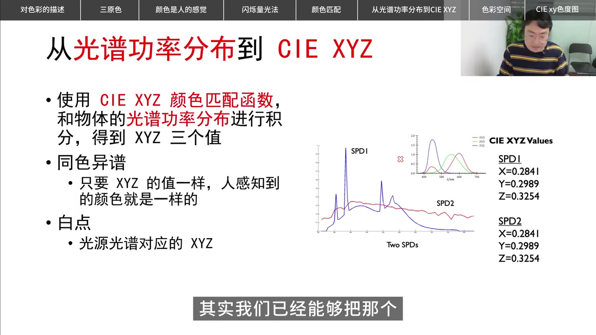
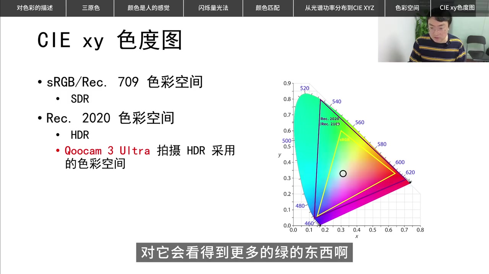

开场：别急着背结论，先走人类量化色彩的路
视频开头，主讲人欢迎观众回到频道，说明本期是一堂色彩科普。他强调：人类对色彩的描述长期停留在主观、定性层面，系统的定量化大约要到一战前后、1920–1930 年代才真正开始。本片想带大家“走过程”，而不是直接甩出最终公式。
主讲人：“而不是直接把最后大家得到的最终结果告诉大家，而是探索一条人类认知的这样一条路径。”
随即进入“对颜色的描述”。画家很早就能用三个维度说话：色调（红/黄/绿……）、亮度（暗到黑、亮到白）、饱和度/色度（有多强、有多纯）。历史经验还告诉人们：三种颜色就能混合出大量颜色；混合又分减色法（颜料、墨水越混越暗）与加色法（光、显示器越混越亮）。

叙述校正：Whisper 将「减色法」听成「检测法」、将「20 世纪初」听成「24 季初」；下文按可见字幕与幻灯片校正，转录区仍保留原始分段。
颜色不是物体的固有属性，而是光谱经人眼处理后的感觉
进入 20 世纪，人们已经知道可见光是连续光谱。这时日常经验开始“别扭”：颜色并不是番茄或生菜固有的物理标签，而是人眼接收光谱功率分布（SPD），再经大脑处理后产生的感觉。

主讲人用可见波段约 380–700 nm 举例：番茄曲线在长波端抬升，看起来是红；生菜在绿色波段更突出；黄油则偏黄。三条真实曲线摆在一起，却很难直观读出“红绿黄”。本片的核心问题由此抛出：一条光谱如何对应某种颜色？主观感受如何量化？
闪烁量光法：先把“亮度”做成曲线
第一个被量化的维度是亮度。视频回顾约 1924 年的思路：固定参考光源的波长与亮度，再调匹配光源的亮度，以约 17 Hz 交替切换。亮度感知一致时，闪烁减弱、颜色显得稳定；不一致时就会明显闪。
屏幕演示里，绿点强度固定、红点由暗到亮变化，在约 15 Hz 切换下，两端分别看到红闪或绿闪，中间某一档则相对稳定——那一档就是人眼感觉“一样亮”的匹配点。把整个可见光谱重复做完，就得到一条“匹配所需辐射功率”随波长变化的曲线：中间谷底说明人眼最敏感，两端趋向红外/紫外则越来越不敏感。

把曲线反过来，就得到 CIE 1924 光度函数。幻灯片同时给出明视觉（photopic，黑色曲线）与暗视觉（scotopic，绿色曲线）：亮环境与暗环境的灵敏度峰值不同。主讲人顺带提到相机 Bayer 阵列里绿色感光单元更多，是因为人对绿段更灵敏——这是工程上的附带说明，不是本片主线证明。

叙述校正：Whisper 将「CIE 1924」听成「CIE924」、将「Bayer Pattern」听成「Bio Pattern」；按幻灯片校正。
Wright-Guild 颜色匹配：三原色、标准观测者与负值
亮度量化之后，下一步是颜色匹配。待测色是单一光谱，以约 1 nm 间隔扫过可见波段；比对侧用红约 700 nm、绿约 546 nm、蓝约 435 nm 三原色调到“看起来一样”。参与者被称为标准观测者。这就是 1920 年代著名的 Wright-Guild 实验。

实验中发现：有些波段无法用三种原色直接混出。做法是把某原色加到待测侧，降低纯度后再匹配，并把“加到对面”的量记为负值。大量实验汇总后，得到 CIE 1931 RGB 颜色匹配函数——曲线仍带有明确的物理波段含义，但红色曲线在部分波段为负。

叙述校正：Whisper 将「Wright-Guild」听成「right due」、将「待测」听成「带侧」、将「纳米」听成「纳密」。
从 RGB 到 XYZ：全正值、复用光度函数、同色异谱
1931 年还没有计算器，人工计算希望系数全为正；同时绿色匹配曲线与光度函数形状相近，希望变换后 Y 尽量对齐光度函数；第三个数学便利是等能量光谱下白点落在新坐标的三分之一附近。一条线性矩阵把 RGB 匹配函数变成 XYZ 匹配函数——负值被翻正，绿色被拨到接近光度函数。
有了 XYZ，只要把物体 SPD 与三条匹配函数积分，就得到三个数。视频用两条外形完全不同的光谱举例：积分后 XYZ 完全相同，人眼就会看成同一颜色——这就是同色异谱。白点则是光源光谱积分得到的 XYZ。

叙述校正：Whisper 将「X,Y,Z」常听成「X,Y,J」或「S,Y,J」、将「坐标系」听成「做标戏」、将「匹配函数」听成「底配函数」。
xy 色度图：丢掉亮度后的平面地图，以及 SDR/HDR 色域
XYZ 空间是复杂三维体。为了更方便工程表达，再做一次归一化映射到 xyY：Y 继续代表亮度，x、y 只表色度。把可见色投影到 xy 平面，就得到经典的马蹄形 CIE xy 色度图。图上的三角形顶点对应 Wright-Guild 三原色；三角形外的光谱色需要“负值原色”才能解释——与前面 RGB 负值首尾呼应。
收尾对比常见显示色域：sRGB / Rec.709（SDR）只占马蹄形内一小块三角形；Rec.2020（HDR）明显更大，尤其向绿色扩展。主讲人提到 Qoocam 3 Ultra 拍摄 HDR 采用的是这类更宽色域空间，相对普通 SDR 相机能还原更多人眼可见色——这是视频末尾的产品语境说明，属于片中陈述。

全片以“非常快的速度”收束：颜色量化不是天上掉下的色度图，而是亮度实验 → 三刺激匹配 → 坐标变换 → 色度投影 → 设备色域比较，一步步搭起来的。主讲人结尾自问：不知道有没有讲清楚——对读者来说，把这条路径记住，就已经抓住了本片的骨架。